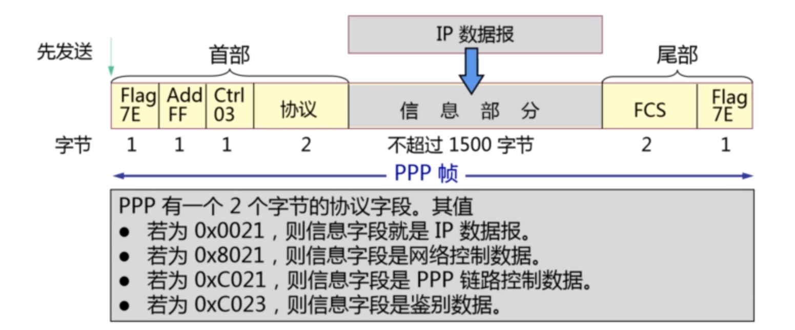

计算机网络笔记（三）
3.1 数据链路层基本功能
封装成帧（最重要）
字符计数法、特殊字符界定法、特殊位串界定法（以01111110为帧的边界，正文中每5个1强制后面添0）、物理层编码违例法（以特殊波形作为帧的边界）
透明传输
帧定界符：SOH（Start Of Header，ASCII码01）、EOT（End Of Transmission，ASCII码04），都是不可打印字符。当传送的帧是用文本文件组成的帧（文本文件中的字符都是从键盘上输入的），那么不管输入什么样的字符都可以放在帧中传输过去，称为透明传输。当数据中有SOH、EOT时会被数据链路层误判为帧的边界，因此在这样的数据前添加转义字符ESC
差错控制
检错码
循环冗余校验CRC：n位冗余码（FCS帧检验序列）是由数据M添加n个0后除以n+1位除数P得到的余数，接收端将M与FCS拼接后除以相同的除数，余数为0正常，余数不为0丢弃
纠错码
海明码
流量控制
滑动窗口协议、停等协议
链路管理
建立、维持、释放连接
3.2 PPP协议
链路类型
广播链路->MAC协议，点到点链路->PPP协议
PPP协议功能
成帧方法、链路控制协议LCP、网络层选项协商方法NCP
PPP协议帧的格式

Flag字段表示帧的边界
Add地址字段
Ctrl控制字段，实际内容为03，为了以后升级可以添加其他控制信息
协议字段可以通过协商为1个字节
FCS检验字段，通过协商可以是4个字节
PPP协议透明传输
异步传输（按字节顺序）：字符填充法，0x7E定界，信息字段中的0x7E变为0x7D和0x5E，若再出现0x7D，0x7D变为0x7D和0x5D；若出现ASCII码的控制字符（即数值小于Ox20的字符），则在该字符前面要加入一个Ox7D字节，同时将该字符的编码加以改变
同步传输（按时间顺序）：以01111110为帧的边界，正文中每5个1强制后面添0
PPP协议工作流程

PPP协议无差错控制
①数据链路层出现差错概率不大，使用简单的PPP协议
②PPP协议主要承载的是IP数据报，IP协议本身是不可靠、无连接的
③PPP协议中的FCS字段可以保证无差错接受
3.3 局域网MAC协议
局域网数据链路层采用广播式通信，节点可以访问网内其他节点，是单位、家庭接入网络主要形式
网卡
实现CSMA/CD和CSMA/CA协议的设备、进行数据的串/并行转换和缓存、需要在计算机操作系统安装设备驱动程序
此处的硬件地址即MAC地址
MAC地址
可采用6字节或2字节，用 - 分割或 : 分割或不分割都可
6字节MAC地址的前3字节为组织唯一标识符，即厂商标识，后3字节为拓展唯一标识符，厂商自行指派，保证不重复
适配器接收到MAC帧时首先检查地址字段是否为本站，不是则丢弃，混杂模式的网卡可收下所有的帧
IEEE规定地址字段第一字节的最低位为I/G位，发往本地的地址包括以下三种
单播（一对一）帧：I/G位=0
广播（一对所有）帧：I/G位=1
多播（一对多）帧：48位地址全为1
多址接入协议
固定多址接入协议对应物理层的TDM、FDM、CDM，SDMA是空（空间）分复用
随机多址接入协议
完全随机：
纯ALOHA：产生数据立即发送，不考虑信道占用情况，冲突的报文被丢弃，发生冲突后随机延迟
时隙的ALOHA：在上面基础上改为报文长度固定、必须在一个时隙内传输（即时间被分为时隙，报文必须在时隙开始处发送）
（载波侦听多址协议）CSMA：
非坚持：当节点监听到信道忙时，随机后延一段时间再来监听
1-坚持：节点发送数据前，先监听信道，若信道忙则一直监听直到空闲，一空闲立刻发送（其实要等9.6μs的最小帧间间隔）
P-坚持：同上，但空闲时以P的概率发送数据，1-P的概率推迟
3.4 CSMA/CD协议
有线局域网以太网采用的MAC协议
两个基本特点：不可靠、无连接，采用曼彻斯特编码方式
电磁波在1km电缆的传播时延约5μs
争用期
CSMA/CD采用1-坚持，端到端往返时延2τ称为争用期，大小为51.2μs，以太网规定最短帧长64字节，即512bit，从而对于10Mbit/s的以太网，发送512bit 的时间就是51.2μs，即争用期大小
经过争用期这段时间还没有检测到碰撞，就肯定此次发送不会发生碰撞
BEB（二进制指数退避）算法
发送数据的站检测到冲突后，还会发送32bit或48bit的人为干扰信号，且这个信号发送在BEB算法之前
CSMA/CD协议帧格式
注意头部的8bit前同步码与帧开始定界符
以太网规定帧间最小间隔为9.6μs
3.5 无线网MAC协议
无线网络
WPAN（无线个域网）-> WLAN（无线局域网）-> WMAN（无线城域网） -> WWAN（无线广域网）
支持WPAN主流技术：ZigBee（自组织网络形式建立网络拓扑）、蓝牙（标准为IEEE 802.15.1）
WMAN的典型无线宽带接入城域网技术标准WiMAX
WWAN是蜂窝通信系统的主要解决方案
WLAN协议主要是802.11协议
802.11 BSS（基本业务集）
BSS：存在接入点（AP），负责集内工作站之间的通信
IBSS：独立的基本业务集，无接入点，又称移动自组网模式（Ad hoc），所有节点都是无线通信
业务集由SSID标识，BSS中的BSSID可以理解为AP的MAC地址
ESS：通过骨干网将多个BSS串联起来形成，同一个ESS内的SSID相同
DS（分布式系统）：通过AP将无线局域网与有线局域网相连
3.6 CSMA/CA协议
802.11面临的问题
隐藏终端问题、暴露终端问题
帧间间隔
SIFS：一次交互过程中，两帧之间的间隔
PIFS：点协调方式下（AP控制下）访问信道的时间间隔
DIFS：两次业务之间的时间间隔
EIFS：前一帧出错时，需要延迟的时间间隔
信道预约流程
CSMA/CD是冲突检测，CA是冲突避免（设备限制无法边发送边监听）
BEB算法
退避窗口默认开始为[0,31]个slot，发生一次重传后，竞争窗口在[0,63]个slot中随机选取一个，每发生一次重传，竞争窗口就移至下一个2的指数，六次封顶
802.11帧结构
字段内容略（太多了不想学...
3.7 物理层和数据链路层网络互联设备
物理层
集线器（中继器的集中）、中继器
数据链路层
网桥：生成树算法
交换机：
通过地址学习过程将端口与MAC地址对应，泛洪
转发有存储转发（检查差错）与直通转发两种工作方式
划分VLAN（虚拟局域网）：基于端口划分、基于MAC地址、根据网络层、基于组播（后两种不适合局域网）
链路类型：访问（Access）与干路（Trunk）（多个VLAN之间的通信）
干道链路两端，输出端口会剥离VLAN标签，基于802.1Q帧
如上图，802.1Q是基于802.11帧的，添加了Tag字段，PRI字段表示优先级